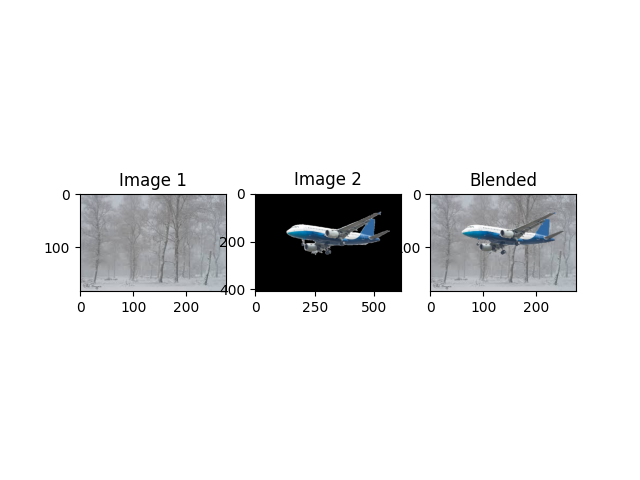
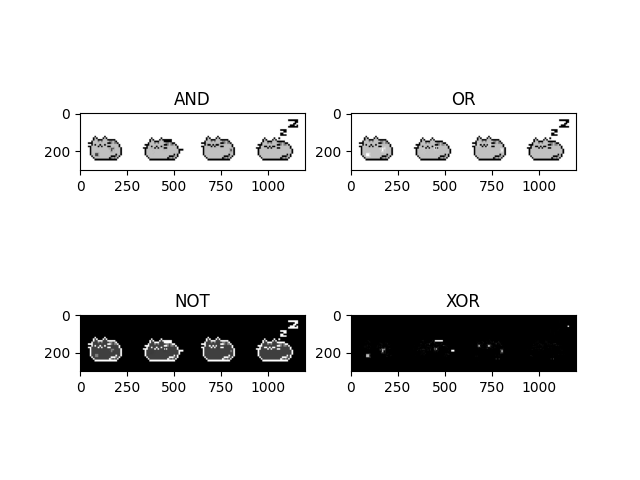

Image Arithmetic & Logical Operations
1. Theory
Arithmetic and logical operations are widely used in image processing for tasks like blending, masking, and highlighting regions of interest.
- Addition: Combines two images pixel by pixel (useful for blending).
- Subtraction: Highlights differences between two images.
- Logical Operations:
- AND: Keeps overlapping pixel regions.
- OR: Combines non-zero regions from both images.
- NOT: Inverts pixel values.
- XOR: Highlights non-overlapping regions.
2. Code Example
import cv2
import numpy as np
import matplotlib.pyplot as plt
# --- Addition Example ---
def add_example():
img1 = cv2.imread('assets/towers.jpg')
img2 = cv2.imread('assets/plane.png', cv2.IMREAD_UNCHANGED)
# Resize img2 to match img1
img2_resized = cv2.resize(img2, (img1.shape[1], img1.shape[0]))
# Split channels and alpha
bgr_img2 = img2_resized[:, :, :3]
alpha_channel = img2_resized[:, :, 3] / 255.0
blended = np.zeros_like(img1, dtype=np.float32)
for c in range(3):
blended[:, :, c] = (1 - alpha_channel) * img1[:, :, c] + alpha_channel * bgr_img2[:, :, c]
blended = np.uint8(blended)
# Display
plt.subplot(1,3,1); plt.imshow(cv2.cvtColor(img1, cv2.COLOR_BGR2RGB)); plt.title("Image 1")
plt.subplot(1,3,2); plt.imshow(cv2.cvtColor(img2, cv2.COLOR_BGR2RGB)); plt.title("Image 2")
plt.subplot(1,3,3); plt.imshow(cv2.cvtColor(blended, cv2.COLOR_BGR2RGB)); plt.title("Blended")
plt.show()
# --- Subtraction Example ---
def sub_example():
img1 = cv2.imread('assets/cat.jpg', 0)
img2 = cv2.imread('assets/cat2.jpg', 0)
img2_resized = cv2.resize(img2, (img1.shape[1], img1.shape[0]))
subtracted_img = cv2.subtract(img1, img2_resized)
plt.subplot(3,1,1); plt.imshow(img1, cmap='gray'); plt.title("Image 1")
plt.subplot(3,1,2); plt.imshow(img2, cmap='gray'); plt.title("Image 2")
plt.subplot(3,1,3); plt.imshow(subtracted_img, cmap='gray'); plt.title("Subtracted Result")
plt.show()
# --- Logical Operations Example ---
def logical_example():
img1 = cv2.imread('assets/cat.jpg')
img2 = cv2.imread('assets/cat2.jpg')
plt.subplot(2,2,1); plt.imshow(cv2.bitwise_and(img1,img2)); plt.title("AND")
plt.subplot(2,2,2); plt.imshow(cv2.bitwise_or(img1,img2)); plt.title("OR")
plt.subplot(2,2,3); plt.imshow(cv2.bitwise_not(img1)); plt.title("NOT")
plt.subplot(2,2,4); plt.imshow(cv2.bitwise_xor(img1,img2)); plt.title("XOR")
plt.show()
# Run examples
# add_example()
# sub_example()
logical_example()
3. Example Output
Image Addition (Alpha Blending):
Logical Operations:
